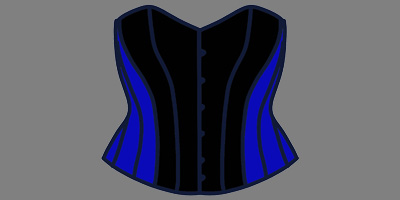
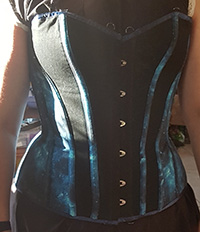
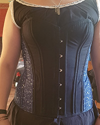
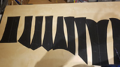

Korsetts
Hier kommt alles bezüglich Korsetts von mir hin.
Universum Korsett
Hier mein Korsett mit Universums print.
Konstellations Korsett
Hier mein Korsett mit Sternkonstellationen print.
Unvollständige Korsett Anleitung
Die erste Korsett Anleitung, die nicht fertig ist. Ursprüunglich im Forum vom Verein für historisches Handwerk und lebndige Geschichte e.V. gepostet. Die Anleitung hört bei der Anpassung des Korsetts auf. Eine vollständige Korsett Anleitung ist geplant.
Anleitung Korsett (vollständig)

Hier wird eine Korsett Anleitung zu finden sein.